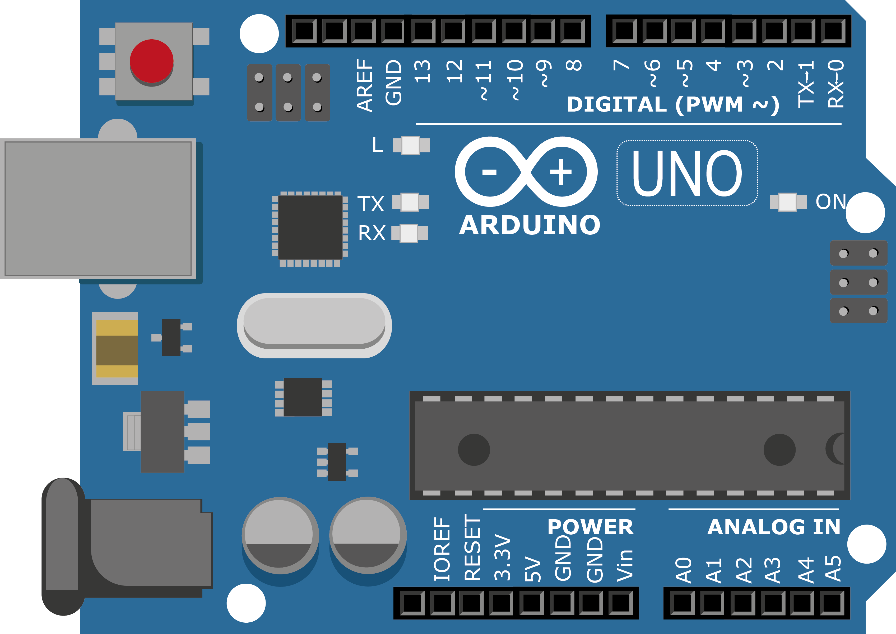
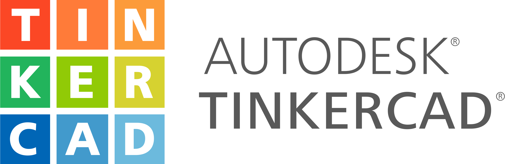

Arduino é uma plataforma eletrônica open-source baseada em hardware e software fáceis de usar. Destina-se a qualquer pessoa que faça projetos interativos. As possibilidades de projetos com Arduino são diversas, com criatividade e conhecimento você pode criar projetos incríveis e divertidos!

Tinkercad é um aplicativo Web gratuito para prjetos 3D, eletrônica e codificação. É uma ferramenta muito interessante para começar o aprendizado de Arduino por permitir simular circuitos virtualmente e programar com blocos. Assim, você pode testar seus projetos antes de reproduzi-los na vida real!